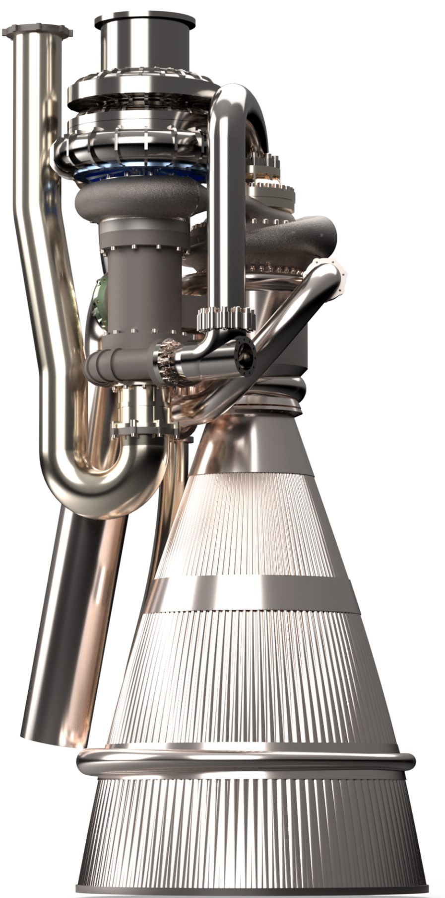
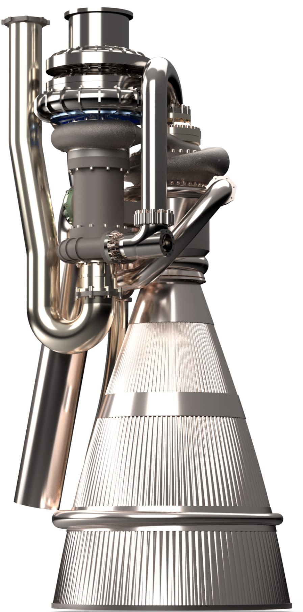

Alexander Vickery
<avickery@iastate.edu>
Blog, projects, essays, etc.
New!
Check out the Neurodivergent Student Organization (NDSA) at Iowa State University!
We're a group of neurodivergent students helping other neurodivergent students!
My resume
Selected Works
Media
Publications
-
Hulscher, N., Vickery, A., et al., 2024.
Resolution of Refractory COVID-19 Vaccine-Induced Myopericarditis with Adjunctive Rapamycin.
Medical Research Archives. 12(11). DOI:
10.18103/mra.v12i11.6099
Gallery
X-37B model, for an aerospace class. This might look (and was) relatively simple, but I tried to really focus on appropriate and masterful techniques for specifying the geometry. Just look at that lofting! This is, incidentally, how actual aircraft are designed. A smooth geometry is especially important for an orbital glider like the X-37B (via aerothermal effects), as the shock distance is inversely proportional to local curvature (Cf. how the space shuttle leading edges were the hottest part of the TPS)
Rocket engine cutaway
 Rocket engine, figure

Engine at the Spring MMXXV Engineering Student Project Showcase
Ballistic basis vectors for what IBT is developing. I cannot write much publicly about this because of trade secrets, but it is very, very interesting what we are finding. What I can say in general is that prior assumptions about limits when aiming things will not apply in the very near future
Rocket engine, figure

Engine at the Spring MMXXV Engineering Student Project Showcase
Ballistic basis vectors for what IBT is developing. I cannot write much publicly about this because of trade secrets, but it is very, very interesting what we are finding. What I can say in general is that prior assumptions about limits when aiming things will not apply in the very near future
 Single-shaft, single turbine turboprop with unusual afterburning and lift augmentation
Second turboprop geometry core
Single-shaft, single turbine turboprop with unusual afterburning and lift augmentation
Second turboprop geometry core
 Second revision of turboprop core, in situ on the aircraft
...
Spring 2025 Aircraft, lateral view
Spring 2025 Aircraft, forward view
FRC Intake Study, ca. 2019
Launcher Study, ca. 2016
Mass optimization study, ca. 2016
Glider Study, 2015
Second revision of turboprop core, in situ on the aircraft
...
Spring 2025 Aircraft, lateral view
Spring 2025 Aircraft, forward view
FRC Intake Study, ca. 2019
Launcher Study, ca. 2016
Mass optimization study, ca. 2016
Glider Study, 2015
Polemics
Starships; or, Dreams without Discipline